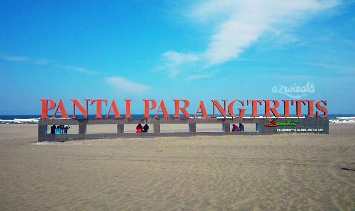
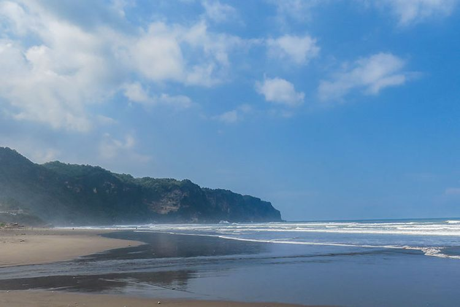
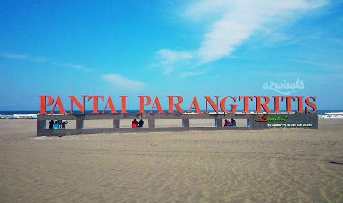
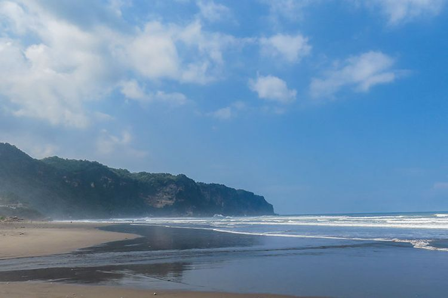
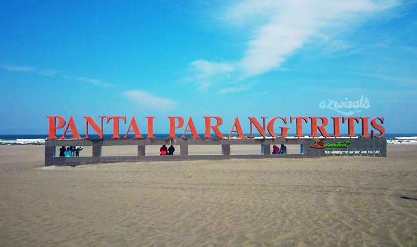
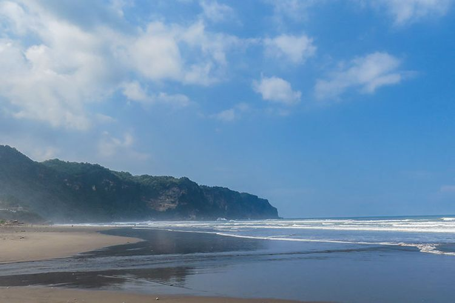

Parang tritis, adalah salah satu obyek wisata yang berada di selatan kota Yogyakarta yang beralamat di Jl. Pantai parangkusumo, pantai parangtritis,kretek,bantul,daerah istimewa Yogyakarta,Indonesia 55772.Pantai parangtritis tercatat masuk dalam kecamatan Kretek, Kabupaten Bantul, Yogyakarta. berjarak sekitar 27Km dari pusat kota Yogyakarta. waktu terbaik ketika mengunjungi obyek wisata pantai parangtritis, adalah pada sore hari. Hal ini dikarenakan wisatawan dapat menikmati pemandangan matahari terbenam. Pemandangan matahari terbenam di obyek wisata pantai parangtritis cukup terkenal, dan sayang sekali untuk dilewati. Selain itu, jika datang lebih awal menuju tempat ini, obyek wisata pantai parangtritis, wisatawan dapat melihat pemandangan pantai dari tebing yang letaknya berada tepat dibelakang pantai parangtritis ini. Tebing ini bernama Tebing Gembirawati. Di tebing ini wisatawan dapat menemukan reruntuhan Candi Gembirawati. Letak reruntuhan candi Gembirawati ini berada di bagian timur tebing Gembirawati. Wisatawan dapat menyusuri sepanjang pinggiran pantai menggunakan ATV ataupun delman dengan tarif yang cukup terjangkau. Ada juga yang menawarkan melihat keindahan pantai dengan menggunakan Aeromodeling yang juga bisa disewa.
Menurut keyakinan masyarakat sekitar, obyek wisata pantai parangtritis ini sangat erat dengan hal-hal mistis, lebih tepatnya kerajaan gaib Ratu Pantai Selatan atau masyrakat sekitar menyebutnya Nyi Roro Kidul. Pantai parang tritis juga disebut sebagai pintu gerbang menuju kerajaan laut pantai selatan. Oleh sebab itu masyarakat sekitar percaya bahwa jika ada wisatawan yang berkunjung mnggunakan pakaian berwarna hijau, maka orang tersebut akan mendapatkan musibah.
Untuk harga tiket masuknya pantai parangtritis terbilang sangat murah,hanya perlu mengeluarkan uang sebesar Rp.5000 per orang untuk dapat memasukinya dan untuk biaya parkir hanya membutuhkan Rp.2000 per motor dan Rp.5000 per mobil
Pantai ini memiliki jam buka sama seperti pantai lain,jam buka pantai ini 24 jam,pengunjung bahkan bisa datang saat malam hari untuk sekedar menikmati suasana pantai pada saat matahari sudah tenggelam.

